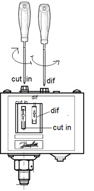

Thème / DomaineRemplacement d'un composant simple — sans manipulation de fluide
Module atelier S9-F2 · 4 h × 2 passagesRemplacement d'un composant simple
SéquenceS9 · semaines 29-36
Nom, prénom (binôme)________________
Nom, prénom (binôme)________________
Date (passage 1 / passage 2)_______ / _______
Positionnement01234
Mise en situation professionnelle
Ordre d'intervention n° OI-S9-2 : à la suite du diagnostic mené en S9-F1 sur l'installation de
l'arrière-boutique, un composant a été désigné comme fautif. « Remplacez le composant identifié,
remettez en état, rédigez le compte rendu. » Vous passez côté maintenance : toute l'année vous avez
installé (cuivre, brasage), prouvé (étanchéité azote), mis en service (vide, manomètres, réglages, charge à
blanc) — aujourd'hui, le client rappelle : un organe est en cause, il faut le remplacer et rendre compte
de l'intervention, comme le fait tout frigoriste en tournée de dépannage.

Un pressostat basse pression : un organe électrique qui coupe et réenclenche un
circuit selon une pression, réglable par ses vis (repérées ci-dessus). D'après : ressources pressostat
(05_Ressources-Partagees/Pressostats-Manometres, 02_CAP-IFCA/C5-Maintenir).
⚠ Pourquoi AUCUNE manipulation de fluide en 1re année (rappel)
— Manipuler un fluide frigorigène réel exige, en France, une attestation d'aptitude, que vous préparerez
en 2e année. Ce module ne vous fait donc jamais ouvrir un circuit en charge ni récupérer
de fluide : vous remplacez uniquement des organes électriques ou mécaniques (pressostat, thermostat,
relais, condensateur, ventilateur), ou un organe sur un circuit que le professeur a préalablement inerté à
l'azote — le fluide a déjà été récupéré par lui, en amont, hors de votre présence. Vous ne récupérez jamais
de fluide, vous n'ouvrez jamais un circuit en charge, vous ne brasez ni ne coupez jamais un circuit contenant du
fluide.
Ce qui change depuis S8 — En S8, vous étiez côté mise en service :
vous chargiez une installation neuve, prête à démarrer. Aujourd'hui, vous basculez côté MAINTENANCE :
S9-F1 vous a appris à chercher la panne par la mesure (HP/BP, températures, SC/SR) ; ce module vous
apprend à remplacer le composant fautif et à rendre compte de votre intervention. Une nouvelle phase
s'ajoute avant toute procédure : OBSERVER l'état initial (photo, repérage) avant de toucher à quoi que ce
soit — exactement ce que fait un professionnel avant une intervention qui engage sa responsabilité.
Passage 1 / Passage 2 — ce qui change
Passage 1 (semaine 31, avant É4) — découverte guidée : le professeur fait d'abord la démonstration
complète du geste sur un composant électrique (ex. un pressostat), commentée pas à pas. Vous menez
ensuite votre propre gamme, guidée et visée à chaque étape : constat, dépose, inspection, montage neuf, repose,
auto-contrôle qualité, essai de remise en service, 1er compte rendu. Passage 2 (semaine 33, après É4) — intégration et reprise : après un rappel bref, vous menez la gamme
complète en autonomie, cette fois sur un composant du circuit inerté à l'azote par le professeur
(ex. un filtre déshydrateur) — l'occasion de raccorder/isoler un tronçon de circuit, pas seulement de débrancher
des fils. Vous concluez par un verdict « je signe mon travail » motivé.
Tâches
T16 Assurer l'entretien d'une installation cœur métier de S9 T1 Renseigner et transmettre des documents de suivi d'intervention compte rendu
Savoirs
S5.1 Systèmes thermodynamiques à détente directe augmenté Prérequis : mesures électriques (S1-S6), azote et manodétendeur (S5-S6), manomètres (S7-F1), diagnostic S9-F1
Savoir-être
Rigueur de la gamme (chaque étape cochée et visée) · sécurité NF C 18-510 et azote · honnêteté de l'auto-contrôle et du compte rendu · posture « je signe mon travail »
Compétences (≤ 4)
ConfortementC5.1 Remplacer des composants de l'installation — sans manipulation de fluide Confortement — visé MC3.4 Façonner, raccorder, assembler, isoler les circuits (frigorifique, hydraulique, aéraulique) ConfortementC3.7 Contrôler la mise en œuvre des équipements électriques et fluidiques
Objectifs — je serai capable de…
observer et constater l'état initial d'un composant avant toute intervention (photo, repérage) ;
consigner électriquement une installation selon la procédure NF C 18-510 (VAT 3 points) avant de toucher à un organe électrique ;
déposer proprement un composant défectueux, avec l'outil adapté, sans jamais forcer ;
monter et reposer le composant neuf (joint neuf si concerné, serrage correct, câblage conforme à l'original) ;
auto-contrôler mon propre travail, étape par étape, sur 4 critères : propreté, serrage, étanchéité, essai de remise en service ;
vérifier l'étanchéité à l'eau savonneuse d'un raccord hors fluide (azote résiduel ou air), sans jamais toucher un circuit en charge ;
rédiger un compte rendu d'intervention complet, honnête et signé — « je signe mon travail ».
Prérequis — je sais déjà…
Ce n'est pas votre première fois avec un tournevis, un multimètre ou une
bouteille d'azote. Aujourd'hui, on ajoute un geste nouveau — remplacer un organe plutôt que le poser pour
la première fois — et une posture nouvelle : rendre compte comme en situation professionnelle réelle :
mesurer une tension, une continuité au multimètre (S1 à S6) ;
manipuler une bouteille d'azote et un monodétendeur, en sécurité (S5, S6, S8-F1) ;
poser et lire un manifold, repère HP rouge / BP bleu (S7-F1) ;
le composant à remplacer a déjà été identifié lors du diagnostic mené en S9-F1 : vous ne
recommencez pas l'enquête, vous agissez sur sa conclusion ;
votre plan de progrès d'É3 s'applique aussi ici, en particulier sur la rigueur du geste et l'honnêteté du
contrôle.
Si la consignation NF C 18-510 (VAT 3 points)
vous échappe encore, dites-le au professeur avant de commencer : la phase 5 de ce module la réactive.
Matériel (par binôme, aux deux passages)
Un composant électrique neuf (pressostat, thermostat, relais, condensateur ou ventilateur selon le
poste) avec son joint si concerné
Un multimètre (VAT 3 points) et l'outillage adapté (clé plate, tournevis plat et cruciforme — jamais
de clé à molette sur un raccord fileté)
Un appareil photo ou téléphone pour le constat avant intervention (usage strictement encadré)
Un marqueur ou du scotch repère pour numéroter les fils avant dépose
De l'eau savonneuse (solution moussante) pour le contrôle d'étanchéité hors fluide
Au passage 2 : le circuit inerté à l'azote par le professeur (filtre déshydrateur à remplacer),
manifold et flexibles déjà maîtrisés (S7-F1, S8-F1)
La gamme de dépose/repose + check-list qualité (en annexe de ce document)
EPI complets : lunettes, gants adaptés (isolants pour la partie électrique, fluide pour la partie inertée)
Ce module réunit deux situations bien distinctes, chacune avec sa propre mise en
sécurité. Sur un organe électrique (pressostat, thermostat, relais, condensateur, ventilateur), le risque
est électrique : consignation NF C 18-510 obligatoire (VAT 3 points) avant tout démontage. Sur un
organe du circuit inerté à l'azote (ex. filtre déshydrateur), le circuit a été préalablement purgé de
son fluide et mis sous azote à faible pression par le professeur : le risque devient celui de l'azote — gaz
inerte, sans odeur d'alerte, asphyxie possible en local confiné. Dans les deux cas, le professeur
reste présent en permanence.
Risque
Parade
Choc électrique en intervenant sur un organe encore sous tension
Consignation NF C 18-510 complète (disjoncteur ouvert, VAT 3 points 0 V vérifiée) avant tout démontage — jamais d'exception.
Confusion phase/neutre au recâblage → échauffement, court-circuit au redémarrage
Photo systématique du câblage avant dépose, fils numérotés, double vérification avant fermeture du capot.
Ouverture d'un circuit encore en charge de fluide
Interdit sans exception : seul le professeur inerte un circuit à l'azote, en amont, hors de votre présence.
Asphyxie en local confiné (l'azote n'a pas d'odeur)
Local ventilé, professeur présent en permanence pendant toute manipulation du circuit inerté.
Serrage excessif d'un joint ou d'un filet
Vissage à la main d'abord, serrage final au quart de tour franc après butée — jamais « au maximum ».
Auto-contrôle ou compte rendu bâclé, invention d'une valeur
Chaque case de la check-list se coche au moment réel du contrôle ; toute valeur non mesurée reste « à faire valider », jamais inventée.
La logique de la gamme + auto-contrôle — comprendre avant d'agir
Un artisan qui appose sa signature ou son tampon au bas d'un compte rendu engage sa
responsabilité : il ne peut le faire que s'il a suivi une méthode fiable et vérifié lui-même son
travail. C'est le principe de ce module : une gamme fixe l'ordre des opérations (constat, dépose,
inspection, montage, repose), et un auto-contrôle qualité — propreté, serrage, étanchéité, essai de
remise en service — prouve que le travail est fait avant de le déclarer terminé. On ne « pense » pas
avoir bien fait : on vérifie, et alors seulement on peut signer.
La gamme complète, à suivre et à cocher à
chaque étape, est fournie en annexe pleine page de ce document : gardez-la à portée de main tout au long
du module.
Les 8 étapes de la gamme — vue d'ensemble
0SÉCURISATION — consignation NF C 18-510 (organe électrique) ou vérification du circuit inerté à l'azote annoncé par le professeur (organe fluidique).
1CONSTAT — photo et repérage de l'état initial (câblage ou raccords) avant toute dépose.
2DÉPOSE — retrait du composant défectueux, outil adapté, sans forcer.
3INSPECTION — état du filet ou des bornes, joint ancien retiré et examiné.
4MONTAGE — composant neuf, joint neuf si concerné, serrage correct, câblage conforme à la photo.
5AUTO-CONTRÔLE QUALITÉ — propreté, serrage, étanchéité à l'eau savonneuse (raccord hors fluide), essai de remise en service.
6ESSAI DE REMISE EN SERVICE — remise sous tension par le professeur, écoute du fonctionnement, vérification du cyclage de l'organe.
7COMPTE RENDU D'INTERVENTION — rédaction du bon d'intervention, signature — « je signe mon travail ».
🚨 En cas d'incident — arrêtez immédiatement toute manipulation, remettez le
disjoncteur en position ouverte ou fermez le circuit d'azote, alertez le professeur. En cas de doute sur une
odeur d'air « appauvri » ou un étourdissement : sortez du local et alertez, l'azote ne donne aucun signal
d'alerte olfactif. Trousse de secours et arrêt d'urgence localisés en phase 5 de la séance.
Le professeur exécute la gamme complète sur un composant électrique (ex. un
pressostat), poste par poste, en commentant chaque étape. Notez ce qui vous surprend ou ce que vous
n'aviez pas anticipé.
Ce que je retiens de la démonstration :
Repérer les vis de réglage avant toute dépose fait partie du constat : elles ne se
règlent qu'à l'étape finale, sur le composant neuf. D'après : ressources pressostat (05_Ressources-Partagees,
02_CAP-IFCA/C5-Maintenir).
☐ 1. CONSTAT — 2 photos nettes de l'état initial, fils numérotés, tableau fil → borne rempli
☐ 2. DÉPOSE — composant défectueux retiré à l'outil adapté, sans forcer
☐ 3. INSPECTION — filet ou bornes examinés, ancien joint retiré et jeté
☐ 4. MONTAGE — composant neuf posé, joint neuf si concerné, serrage correct, câblage conforme à la photo
☐ Faire viser chaque étape par le professeur avant de passer à la suivante
Tableau de correspondance fils / bornes (constat)
Fil
Couleur
Borne d'origine
Fonction
Fil 1
Fil 2
Fil 3
Question — agir → noter → réfléchir — Pourquoi la photo du câblage se
prend-elle avant la dépose, et non « de mémoire » après ?
Indice : si vous recâblez de travers un
pressostat par erreur, que risque le compresseur au redémarrage ?
Visa professeur — jalon 1
☐ Consignation NF C 18-510 vérifiée ☐ Constat (photo + repérage) complet ☐ Dépose/repose conformes à la gamme ☐ Autorisé(e) à poursuivre vers le jalon 2
PASSAGE 1 · SEMAINE 31 · JALON 2 — auto-contrôle + remise en service + compte rendu — ≈ 45 min
Avant de déclarer votre intervention terminée, vous vous auto-contrôlez sur 4
critères, vous assistez à l'essai de remise en service, puis vous rédigez votre 1er compte rendu
d'intervention.
Auto-contrôle qualité — je vérifie mon propre travail
Critère
Ce que je vérifie
Résultat
Propreté
Poste et zone d'intervention nettoyés, aucun outil oublié, aucune trace de graisse ou de savon
☐ OK ☐ À reprendre
Serrage
Composant neuf serré au couple correct (quart de tour franc après butée), aucun jeu visible
☐ OK ☐ À reprendre
Étanchéité
Eau savonneuse sur le raccord hors fluide (azote résiduel ou air) : 30 s d'observation, aucune bulle
☐ OK ☐ À reprendre
Essai de remise en service
Remise sous tension par le professeur, fonctionnement écouté, cyclage de l'organe vérifié
☐ OK ☐ À reprendre
Un critère « à reprendre » ne se cache pas :
vous en informez le professeur et vous corrigez avant de continuer.
Mon 1er compte rendu d'intervention
Client (générique)
Commerce — arrière-boutique (fil rouge SAV)
Type d'intervention
☐ Dépannage ☐ Entretien ☐ Mise en service
Date
Temps passé
Descriptif de la mission (style télégraphique : composant remplacé, contrôles réalisés, résultat) :
Réglages / valeurs relevées (si le composant en comporte — selon la plaque
signalétique du composant posé, à faire valider par le professeur) :
Signature : ________________
Visa professeur — jalon 2
☐ Auto-contrôle qualité complet et honnête ☐ Essai de remise en service réalisé ☐ Compte rendu complet et signé ☐ Poste rangé
Visa : ________________ Heure : ________________
⚠ Rappel — fin du passage 1 — Le disjoncteur reste sous la responsabilité du
professeur entre deux interventions. Rendez-vous en semaine 33, après É4, pour le passage 2.
PASSAGE 2 · SEMAINE 33 · JALON 1' — 2e composant, circuit inerté, autonomie — ≈ 50 min
Ce qui change par rapport au passage 1 — Vous connaissez déjà la gamme :
après un rappel bref, vous menez cette fois la gamme complète en autonomie, sur un composant du
circuit inerté à l'azote par le professeur (ex. un filtre déshydrateur). Le professeur a purgé le fluide
et laissé le circuit sous azote à faible pression, en amont, hors de votre présence : vous ne récupérez
jamais de fluide, vous n'ouvrez jamais un circuit en charge.
Symbole normalisé du filtre déshydrateur : un tronçon isolable du circuit, entre
deux vannes ou deux raccords. D'après : bibliothèque de symboles techniques FrigorX.
Ma gamme complète, en autonomie
☐ 0. SÉCURISATION — vérifier auprès du professeur la pression résiduelle d'azote annoncée avant de toucher au raccord
☐ 1. CONSTAT — photo de l'état initial, repérage du sens de montage du composant
☐ 2. DÉPOSE — isolement du tronçon, dévissage à la clé plate (jamais de clé à molette), sans perte de gaz mesurable
☐ 3. INSPECTION — filets et raccords examinés, ancien joint retiré
☐ 4. MONTAGE — composant neuf, joint neuf, serrage au quart de tour franc après butée, raccordement conforme au sens repéré
☐ Faire viser chaque étape par le professeur avant de passer à la suivante
Composant remplacé
Sens de montage vérifié ?
Anomalie observée
☐ Oui ☐ À revoir
Question — Ce composant isole un tronçon du circuit : en quoi ce geste
relève-t-il de façonner, raccorder, isoler un circuit (C3.4), et pas seulement de débrancher des fils
comme au passage 1 ?
Visa professeur — jalon 1'
☐ Sécurisation vérifiée avant toute action ☐ Gamme respectée en autonomie ☐ Autorisé(e) à poursuivre vers le jalon 2'
PASSAGE 2 · SEMAINE 33 · JALON 2' — auto-contrôle complet + compte rendu + verdict — ≈ 75 min
Vous menez cette fois l'auto-contrôle qualité complet en autonomie, vous
assistez à l'essai de remise en service, vous rédigez un compte rendu complet, et vous concluez par un
verdict « je signe mon travail ».
Auto-contrôle qualité — complet, en autonomie
Critère
Ce que je vérifie
Résultat
Propreté
Poste et zone nettoyés, aucune trace de savon, outillage rangé
☐ OK ☐ À reprendre
Serrage
Serrage correct sur chaque raccord touché, aucun jeu
☐ OK ☐ À reprendre
Étanchéité
Eau savonneuse sur chaque raccord démonté/remonté, 30 s, aucune bulle
☐ OK ☐ À reprendre
Essai de remise en service
Remise en fonctionnement supervisée, cyclage ou fonctionnement de l'organe vérifié
☐ OK ☐ À reprendre
Mon compte rendu d'intervention — complet
Client (générique)
Commerce — arrière-boutique (fil rouge SAV)
Type d'intervention
☐ Dépannage ☐ Entretien ☐ Mise en service
Date
Temps passé
Descriptif de la mission (style télégraphique) :
Réglages / valeurs relevées (selon la plaque signalétique du composant posé,
à faire valider par le professeur) :
Signature : ________________
Mon verdict « je signe mon travail » :☐ TRAVAIL PROUVÉ (gamme respectée, auto-contrôle complet, aucune case oubliée)☐ À REPRENDRE
Justification — qu'est-ce qui, dans mon auto-contrôle, me permet d'affirmer que mon travail est fiable ?
Visa professeur — jalon 2'
☐ Auto-contrôle complet et honnête ☐ Compte rendu complet et signé ☐ Verdict motivé ☐ Poste rangé, circuit refermé
☐ 1. Vérifier que le disjoncteur est laissé dans l'état indiqué par le professeur
☐ 2. Fermer le circuit inerté à l'azote si concerné, sous supervision
☐ 3. Évacuer l'ancien composant et son emballage avec les déchets
☐ 4. Nettoyer les traces d'eau savonneuse (poste ET sol)
☐ 5. Ranger l'outillage, vérifier qu'aucun outil ne reste sur le poste
☐ 6. Nettoyer l'établi de mon poste
☐ 7. Retirer les EPI en dernier, une fois le poste totalement rangé
Jalons franchis
☐ Passage 1 : démonstration observée, constat/dépose/repose réalisés et validés, auto-contrôle qualité mené, 1er compte rendu rédigé
☐ Passage 2 : 2e composant remplacé en autonomie, auto-contrôle qualité complet, compte rendu complet, verdict « je signe mon travail » motivé
Visa professeur (passage 1) : ________________ Visa professeur (passage 2) : ________________
Grille d'évaluation
Échelle FrigorX : 0 Non évalué · 1 Non acquis · 2 En cours
d'acquisition · 3 Acquis · 4 Parfaitement maîtrisé. Statut du jour : C5.1 Confortement ·
C3.4 Confortement (visé M) · C3.7 Confortement — aucune de ces compétences n'est remontée sur
École Directe dans ce module (la remontée officielle se fait à É4, semaine 32).
Compétence / savoir-être
Ancrage
0 Non évalué
1 Non acquis
2 En cours
3 Acquis
4 Maîtrisé
C5.1 Remplacer des composants de l'installation — sans manipulation de fluide
sur T16 · S5.1
Compétence non observée ce jour.
Ne parvient pas à mener la gamme même avec l'aide du professeur (dépose forcée, câblage inversé, joint oublié).
Mène la gamme avec l'aide du professeur (rappel d'une étape).
Mène seul(e) la gamme complète dans l'ordre, aucun geste interdit fluide, composant reposé conforme.
Comme « Acquis », et repère et corrige une anomalie non prévue avant de continuer, explique une étape à un pair.
C3.4 Façonner, raccorder, assembler, isoler les circuits (frigorifique, hydraulique, aéraulique)
sur T16 — poste circuit inerté azote
Compétence non observée ce jour.
Raccordement/isolement non conforme malgré aide (fuite, mauvais serrage, sens de montage inversé).
Raccorde/isole avec l'aide du professeur.
Raccorde/isole seul(e), sans fuite, conforme au sens de montage.
Comme « Acquis », et vérifie et corrige seul(e) le raccordement d'un pair.
C3.7 Contrôler la mise en œuvre des équipements électriques et fluidiques
sur T16 — auto-contrôle qualité
Compétence non observée ce jour.
Auto-contrôle absent ou bâclé (étanchéité non vérifiée, serrage non contrôlé).
Auto-contrôle partiel, avec l'aide du professeur.
Auto-contrôle complet et honnête (propreté, serrage, étanchéité, essai), mené seul(e).
Comme « Acquis », et repère une anomalie non prévue et la signale avant de continuer.
Savoir-être — sécurité, rigueur, « je signe mon travail »
observation continue
Non observé ce jour.
Geste dangereux malgré rappel (touche au fluide, ouvre un circuit en charge, manipule sans professeur présent) : niveau 1 automatique.
Sécurité globalement respectée, quelques rappels nécessaires.
EPI et consignation respectés sans rappel, compte rendu honnête et complet.
Comme « Acquis », et signale spontanément un doute plutôt que de deviner, assume et corrige une erreur repérée seul(e).
Si vous étiez concerné(e) par un objectif de
progrès à É3 sur la rigueur du poste ou l'honnêteté du contrôle : avez-vous progressé aujourd'hui ?
Variantes
Consolidation : au passage 1, le professeur reste au poste pour l'intégralité de la dépose et de la
repose ; au passage 2, un rappel photo étape par étape reste affiché au poste.
Standard : déroulement tel que décrit dans ce document.
Approfondissement : après le jalon 2' validé, expliquer à un pair pourquoi une étape de la gamme
vient à cette place précise, et proposer un 3e composant à traiter si le temps le permet.
Documents à remettre
Ce document complété (les deux passages : gammes, visas, tableaux, comptes rendus, questions répondues)
Fiche de sécurité à cocher visée par le professeur, aux deux passages
Bon de commande hebdomadaire
D'après : Activité 241
« Remplacement d'un filtre déshydrateur » (03_BAC-MFER/S2-Systemes — réécrite ici sans récupération de
fluide par l'élève, sur circuit préalablement inerté à l'azote par le professeur, la source traitant un
circuit réellement chargé, procédure NON reprise) ; TP1B « Remplacement + réglage pressostat BP » et TP1C
« Dépose + étanchéité + remise en service » (Package_EP3_CAP_IFCA_final — structure de la gamme, du constat
photographié, du recâblage à l'identique, de l'auto-contrôle et du bon d'intervention, simplifiés pour le
niveau CAP 1re année : les étapes de pump-down réel sur circuit chargé et de récupération de
fluide ne sont pas reprises, le contrôle d'étanchéité se fait ici uniquement à l'eau savonneuse sur un raccord
hors fluide) ; ressources pressostat (05_Ressources-Partagees/Pressostats-Manometres, AFPA
02_CAP-IFCA/C5-Maintenir) ; rapport-dintervention.docx et fiche d'intervention clim froid.docx
(02_CAP-IFCA/C4-MettreEnService, C5-Maintenir — structure du compte rendu, réécrite ici avec client générique).
Charte pédagogique FrigorX (§7 sécurité) ; référentiel CAP IFCA (codes C5.1, C3.4, C3.7, T16, T1, S5.1). Aucune
valeur de réglage n'est affirmée dans ce document ; toute valeur mesurée par l'élève est comparée « à faire
valider par le professeur ».
ANNEXE — GAMME DE DÉPOSE/REPOSE + CHECK-LIST QUALITÉ
À conserver sous les yeux à chaque intervention (passage 1 et
passage 2). Cette gamme s'applique à tout organe hors fluide : électrique (pressostat, thermostat,
relais, condensateur, ventilateur) ou sur circuit préalablement inerté à l'azote par le professeur
(ex. filtre déshydrateur). Cochez chaque case au moment réel du geste — jamais après coup. Faites viser chaque
étape par le professeur avant de passer à la suivante.
Étape 0 — SÉCURISATION
☐ Organe électrique : disjoncteur général ouvert, VAT 3 points (0 V vérifié), EPI électriques portés
☐ Organe sur circuit inerté : vérifier auprès du professeur la pression résiduelle d'azote annoncée avant tout dévissage — jamais de fluide, jamais un circuit en charge
☐ EPI complets portés (lunettes, gants adaptés)
Étape 1 — CONSTAT
☐ Prendre 2 photos nettes de l'état initial (câblage ou raccords) sous différents angles
☐ Repérer chaque fil ou noter le sens de montage (marqueur, scotch numéroté)
☐ Renseigner le tableau de correspondance (fil/borne, ou sens de montage)
Étape 2 — DÉPOSE
☐ Débrancher les fils ou isoler le tronçon, en partant du plus accessible
☐ Dévisser à l'outil adapté (clé plate à la bonne taille) — jamais de clé à molette
☐ Retirer l'ancien joint (l'inspecter, le jeter — jamais réutilisé)
☐ Poser l'ancien composant sur un chiffon, avec les déchets
Étape 3 — INSPECTION
☐ Examiner le filet ou les bornes côté installation : propre, intact, pas de copeaux ni de trace d'humidité
☐ Signaler tout défaut au professeur avant de continuer
Étape 4 — MONTAGE
☐ Vérifier que le composant neuf a bien un joint neuf (sinon le poser)
☐ Visser à la main d'abord — jusqu'à sentir la butée, sans forcer
☐ Serrer à la clé d'un quart de tour franc après butée — pas plus
☐ Recâbler exactement selon la photo de l'étape 1, serrer chaque borne, tirer légèrement chaque fil pour vérifier la tenue
☐ Vérifier deux fois avant de refermer le capot
Étape 5 — AUTO-CONTRÔLE QUALITÉ
☐ Propreté : poste et zone nettoyés, aucun outil oublié
☐ Serrage : aucun jeu visible sur le composant reposé
☐ Étanchéité : eau savonneuse sur le raccord hors fluide (azote résiduel ou air), 30 s d'observation, aucune bulle
☐ Nettoyer toute trace de savon après contrôle
Étape 6 — ESSAI DE REMISE EN SERVICE
☐ Remise sous tension effectuée par le professeur
☐ Écouter le fonctionnement : régulier, pas de bruit anormal
☐ Vérifier le cyclage ou le fonctionnement de l'organe remplacé
Étape 7 — COMPTE RENDU D'INTERVENTION
☐ Renseigner le client, la date, le temps passé, le type d'intervention
☐ Décrire la mission en style télégraphique (composant remplacé, contrôles réalisés)
☐ Noter les réglages relevés, en les qualifiant « à faire valider » s'ils ne sont pas garantis par une source
☐ Signer — « je signe mon travail »
D'après : TP1B « Remplacement +
réglage pressostat BP » et TP1C « Dépose + étanchéité + remise en service » (Package_EP3_CAP_IFCA_final —
structure des 8 étapes reprise et simplifiée pour le niveau CAP 1re année) ; Activité 241
« Remplacement d'un filtre déshydrateur » (03_BAC-MFER/S2-Systemes — variante circuit inerté azote). Aucune
étape de cette gamme ne mentionne de fluide frigorigène réel manipulé par l'élève.